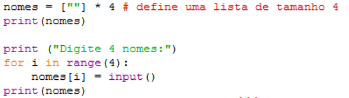

◉ Vetores
➤ Em computação e comum manipular conjunto de valores.
➤ Exemplos: notas, preços, produtos, nomes.
➤ Para manipular um conjunto de dados de um mesmo tipo (inteiro, real, string) há uma estrutura de dados denominada de vetor.
➤ Vetores são “agregados homogêneos unidimensionais” ou “variáveis compostas unidimensionais”
➤ Permitem agrupar um conjunto de valores de um mesmo tipo em uma única variável
Exemplo: Um vetor para armazenar 10 valores numéricos inteiros
◉ Vetores em python
Python possui uma estrutura similar a vetores denominada listas.
➤ Lista é um conjunto ordenado de valores, onde cada valor é identificado por um índice;
➤ Os valores na lista são denominados elementos.
➤ Podemos denominar uma lista de agregado homogêneo unidimensional se todos os elementos são do mesmo tipo.
Definir um vetor “nota” de tamanho 5 de tipo inteiro. nota = [60, 95, 80, 50, 98]
➤ Os valores 60, 95, 80, 50, 98 correspondem as notas, isto e, aos elementos do vetor.
➤ Os valores 0, 1, 2, 3, 4 correspondem aos índices.
◉ Manipulando elementos e índices
A manipulação do vetor depende da manipulação dos índices.
➤ Por exemplo, imprimir a quarta nota do vetor nota:
➤ print (nota [3])
➤ nota é a variável.
➤ 3 é o índice.
➤ [ ] é o operador de elemento.
➤ Lê-se: Acessando a variável nota na posição de índice 3.
◉ Criando listas
Código executado
◉ Acessando os Elementos da Lista
◉ Atribuição em listas em Python
➤ A atribuição permite criar uma nova lista ou modificar um elemento existente de uma lista.
➤ Sintaxe:
➤ variável lista[ índice ] = elemento
◉ Acrescentando elementos
➤ Em Python, a estrutura de lista e dinâmica, ou seja, permite adicionar e remover elementos em uma lista existente.
➤ Ao adicionar ou remover um elemento, o tamanho da lista também e modificado.
➤ Podemos adicionar um elemento ou vários elementos.
Concatenação (+)
➤ Usando o operador + (concatenação)
➤ Usando o método append
➤ O append adiciona elementos
➤ O extend expande listas
➤ O append permite adicionar listas dentro de listas, enquanto o extend é apenas para concatenar listas
◉ Entrada de dados
➤ Entrada de dados em uma lista de tamanho fixo

➤ Entrada de dados em uma lista de tamanho variável
◉ Verificando elementos
➤ Uma operação comum em listas é verificar a presença de um determinado elemento.
➤ Em muitas situações também é necessário saber a posição do elemento.
➤ A forma mais comum e percorrer a lista comparando cada elemento com o valor procurado.
➤ Em Python, o operador in verifica se um elemento esta contido na lista e o operador not in verifica se um elemento
não esta contido na lista.
◉ Percorrendo a Lista
◉ Removendo elementos
➤ Em uma lista podemos remover elementos.
➤ O Python possui o operador del para remover um elemento em uma posição específica da lista.
➤ O índice da posição deve existir, senão o operador devolve erro ao remover o elemento.
➤ Apos a remoção de um elemento da lista, o tamanho da lista é diminudo e o índice dos elementos subsequentes são diminudos em uma unidade.